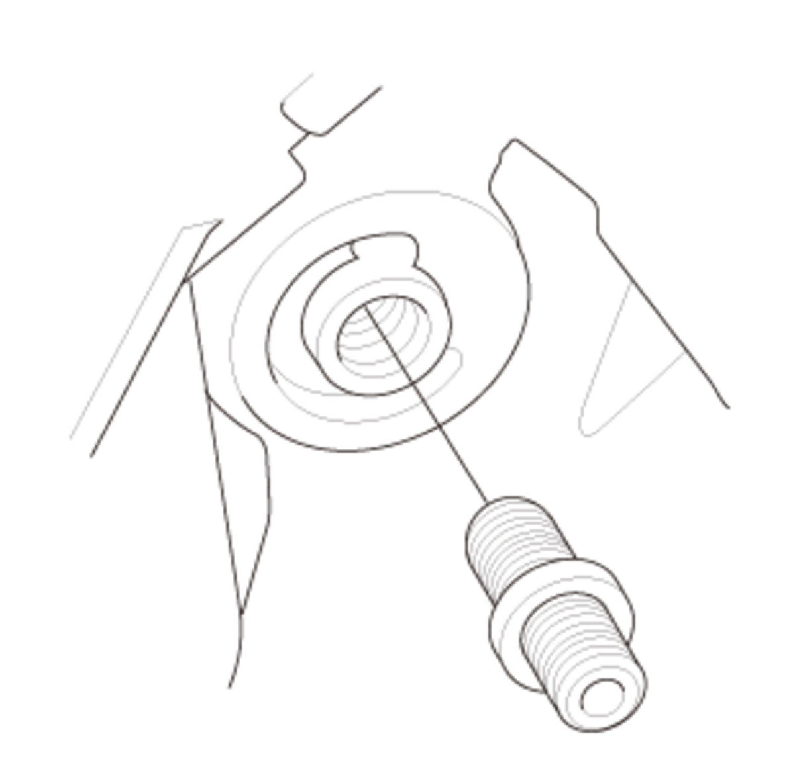

LEMON Manuals
: Even more car manuals for everyone: 1960-2025
Home
>>
Honda
>>
2016
>>
Civic LX, 4D Sedan, Automatic CVT Trans
>>
Repair and Diagnosis
>>
Engine Mechanical
>>
Lubrication System
>>
Lubrication System - Service Information
>>
Removal and Installation
>>
Engine Oil Filter Feed Pipe Removal and Installation (L15B7)
>>
Removal
Engine Oil Filter Feed Pipe Removal and Installation (L15B7): Removal
Oil Filter - Remove
Oil Filter Feed Pipe - Remove

Courtesy of HONDA, U.S.A., INC.